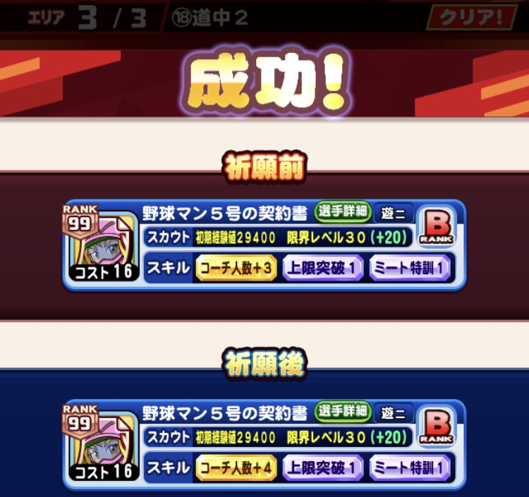
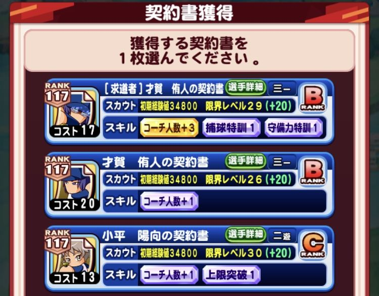
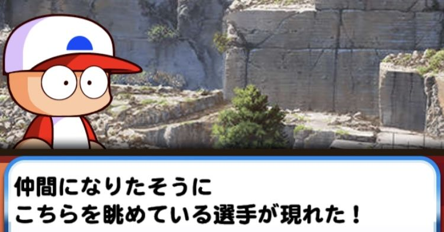
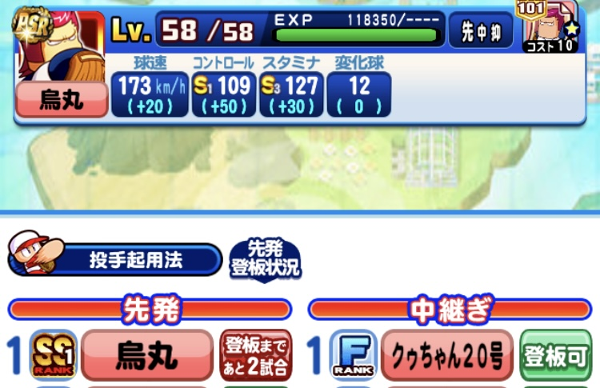
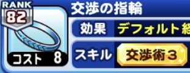

パワクエ 西球記
おすすめ契約書&コーチ+4厳選解説
コーチ人数+4の契約書を狙う方法と、おすすめの契約書・別バージョンキャラ一覧をまとめました。
※11/26更新
西矢田来一の限界レベルが誤って入力されていました。(Lv53⇒Lv33)
実際より査定が高く計算されていたので、おすすめから除外いたしました。
1. コーチ人数+4を狙うには？
一番狙いやすいのは、祈願エンディングがある終盤のクエスト⑱道中2・⑲道中3・むずクエのいずれかで、神前試合で別バージョンの契約書のコーチ+3以上をドロップさせ、祈願でコーチ+4を狙う方法です。

コラボキャラを除く別バージョンキャラは、ドロップするとほぼ確定でコーチ+2以上が付きます。(前半のクエストでは付かない事もあります)
コーチ+3が付く確率も比較的高めです。
契約書+〇や、スカウト率UP〇の専用スキルがあると、更に狙いやすくなります。

契約書+2のスキルのお陰で毎回3枚の契約書出現

スカウト率UPがあれば2回目のスカウト発生率が高くなる
また、神前試合でスカウト対象のキャラが多い対戦相手の場合は、狙い目"以外"のキャラの契約書をデッキにセットしておき、神前試合の前にスカウトマスでスカウトしておきましょう。
既にスカウト済みの選手は抽選から外れるので、目当ての別バージョンを狙いやすくなります。

烏丸をチームに入れている状態
瞬鋭はスカウト候補数4人、烏丸を引いて3人になって[求道者]才賀が確定で出現
神前試合でスカウト出来る選手が残っていない場合、どのチームにも属さない契約書がドロップします。
ここで野球マンシリーズの契約書がドロップする事を確認済みです。
2. おすすめの別バージョン契約書
別バージョンキャラの中でも、コストが比較的少なく、PSR図鑑登録済み・コーチ+4で専用コーチを付けて全能力カンストした時の理論値査定が高いキャラをまとめました。
投手
| 対戦相手 | 天盟(候補5人) |
|---|---|
| 限界Lv(図鑑未登録時) | 21 |
| コスト(白袋) | 21 |
| 理論値(西球記先発) | 11,994 |
エース候補となるキャラクターです。
現在、初心者キャンペーンでSRも配布されているのでSR図鑑登録までならだれでも可能なのも強みです。
PSR図鑑登録済みかつ、限界突破1以上のスキルが付いていればコントロールが101以上になるので、更に査定が伸びます。
| 対戦相手 | 白轟(候補3人) |
|---|---|
| 限界Lv(図鑑未登録時) | 36 |
| コスト(白袋) | 11 |
| 理論値(西球記先発) | 11,981 |
コストが非常に低い割に査定上位のキャラクターです。
対戦相手の白轟がスカウト候補3人しかいないため厳選も行いやすいです。
| 対戦相手 | アンドロメダ(候補7人) |
|---|---|
| 限界Lv(図鑑未登録時) | 29 |
| コスト(白袋) | 23 |
| 理論値(西球記先発) | 11,789 |
アンドロメダ学園はスカウト候補が多いですが、[CUTIE]DJB-Kとセットで狙えるのでオススメです。
| 対戦相手 | 聖タチバナ(候補4人) |
|---|---|
| 限界Lv(図鑑未登録時) | 43 |
| コスト(白袋) | 3 |
| 理論値(西球記先発) | 11,549 |
候補数は4となってますが、六道聖をチームに入れて勝利すると確定でドロップします。コストが非常に低いのが魅力です。
先発適正がやや低くなっているので、中継ぎ抑えでの運用をオススメします。(シミュレータでまだ対応していないため、先発時の実際の数値はもう少し下がります)
野手
| 対戦相手 | 聖タチバナ(候補4人) |
|---|---|
| 限界Lv(図鑑未登録時) | 41 |
| コスト(白袋) | 11 |
| 理論値(スタメン) | 7,850 |
候補数は4となってますが、橘みずきをチームに入れて勝利すると確定でドロップします。
低コスト・高査定の優秀な契約書です。
| 対戦相手 | 瞬鋭(候補4人) |
|---|---|
| 限界Lv(図鑑未登録時) | 29 |
| コスト(白袋) | 17 |
| 理論値(スタメン) | 8,115 |
候補数が4なので比較的狙いやすく、三塁手全体で見ても査定が高めの部類でコストが低めなのが魅力的です。
| 対戦相手 | 特殊 |
|---|---|
| 限界Lv(図鑑未登録時) | 30 |
| コスト(白袋) | 16 |
| 理論値(スタメン) | 8,105 |
神前試合でスカウト候補が既にスカウト済みの時にランダムで出現する契約書です。
候補が1人の対戦相手で狙うといいでしょう。
[帝王実業]友沢亮よりも査定が高く、コストも低いので優秀です。
| 対戦相手 | フリート(候補10人) |
|---|---|
| 限界Lv(図鑑未登録時) | 32 |
| コスト(白袋) | 8 |
| 理論値(スタメン) | 7,920 |
低コストながら、そこそこの査定がついてくれる外野手です。
フリートは候補数が多いので、狙う時はオクタヴィア以外の契約書をデッキにセットして、オクタヴィアとセットで狙うといいでしょう。
オクタヴィアは別バージョンではないのでコーチ+3以上を狙いにくいですが、万が一ドロップした場合は投手最強格です。
| 対戦相手 | アンドロメダ(候補7人) |
|---|---|
| 限界Lv(図鑑未登録時) | 33 |
| コスト(白袋) | 11 |
| 理論値(スタメン) | 7,845 |
[たゆたう水月]清江よりコストが少し重く、査定も低いですが外野スタメン候補になり得ます。
[アンドロメダ]大西とセットで狙うといいでしょう。
3. おすすめ通常バージョン契約書
神前試合で入手可能な通常バージョンでおすすめのキャラをまとめました。
コーチ+3以上付いてくれたらラッキーです。
投手
| 対戦相手 | フリート(候補10人) |
|---|---|
| 限界Lv(図鑑未登録時) | 32 |
| コスト(白袋) | 11 |
| 理論値(西球記先発) | 12,142 |
査定が非常に高いのにコストは格安の最強クラスの契約書です。
フリートは候補数が多いので、清江とオクタヴィア以外の契約書をデッキにセットし、スカウトした状態で狙うといいでしょう。
| 対戦相手 | 天盟(候補5人) |
|---|---|
| 限界Lv(図鑑未登録時) | 22 |
| コスト(白袋) | 22 |
| 理論値(西球記先発) | 12,115 |
通常版はPSR図鑑登録でコントロールが101を突破するので、同条件なら通常版の方が査定が高くなっています。
| 対戦相手 | 赤壁(候補4人) |
|---|---|
| 限界Lv(図鑑未登録時) | 41 |
| コスト(白袋) | 16 |
| 理論値(西球記先発) | 12,439 |
実は最強クラスの契約書ですが、別バージョンではなく、赤壁に別バージョン契約書は存在しないのでやり込み勢向けになります。
| 対戦相手 | 討総(候補6人) |
|---|---|
| 限界Lv(図鑑未登録時) | 24 |
| コスト(白袋) | 23 |
| 理論値(西球記先発) | 12,183 |
球炎島時代から存在する高査定の契約書になりますが、やや型落ち感は出てきました。
討総学園は佐渡至皇理が優秀なので、狙うなら佐渡至皇理の副産物として狙うことになるでしょう。
野手
| 対戦相手 | スパルタ(候補1人) |
|---|---|
| 限界Lv(図鑑未登録時) | 18 |
| コスト(白袋) | 39 |
| 理論値(スタメン) | 8,340 |
球炎島時代から存在する一塁手理論上最強の契約書です。一塁手の契約書は全体的に査定が低いものが多いので、入手出来たら非常に強いです。
| 対戦相手 | 特殊 |
|---|---|
| 限界Lv(図鑑未登録時) | 43 |
| コスト(白袋) | 34 |
| 理論値(スタメン) | 8,305 |
神前試合でスカウト候補が既にスカウト済みの時にランダムで出現する契約書です。
一塁手の中では軍導に次いで査定が高い強力な契約書となっています。
| 対戦相手 | 討総(候補6人) |
|---|---|
| 限界Lv(図鑑未登録時) | 29 |
| コスト(白袋) | 15 |
| 理論値(スタメン) | 7,800 |
二塁手の中ではそれほど高い査定ではないですが、二塁手の別バージョンの[大筒]冴木がコスト38と激重な割にそこまで査定が高い訳ではないため、佐渡至皇理を狙う上での副産物でドロップしてくれるとありがたいです。
| 対戦相手 | 天盟(候補5人) |
|---|---|
| 限界Lv(図鑑未登録時) | 23 |
| コスト(白袋) | 26 |
| 理論値(スタメン) | 8,205 |
高原曲とセットで狙いたい契約書です。遊撃手としての査定はもちろん、手薄な二塁手・外野手のサブポジも所持しているので他ポジションでの起用も可能です。
| 対戦相手 | 討総(候補6人) |
|---|---|
| 限界Lv(図鑑未登録時) | 22 |
| コスト(白袋) | 27 |
| 理論値(スタメン) | 8,035 |
遊撃手だけでなく、数多くのポジションを適正◎で査定を落とすことなく守れるユーティリティー契約書です。
キリルとセットで狙いたい、やり込み勢向けの契約書です。
4. 神前試合で入手できる別バージョンキャラ一覧
※メインポジション毎に、PSR図鑑登録済み・コーチ+4で専用コーチを付けて全能力カンストした時の理論値で査定が高い順に並べています。
投手16人
| キャラ | 限界 Lv | コスト | 対戦相手 | 理論値 先発 | 理論値 西球記先発 |
|---|---|---|---|---|---|
| ［ピクニック］高原曲 | 21 | 21 | 天盟 | 8,580 | 11,994 |
| ［白轟］北斗八雲 | 36 | 11 | 白轟 | 8,517 | 11,981 |
| アフロ猪狩＊ | 20 | 40 | 裏あかつき | 8,388 | 11,774 |
| ［アンドロメダ］大西 | 29 | 23 | アンドロメダ | 8,349 | 11,789 |
| ［匠の技］堂江竜河 | 26 | 31 | マントル | 8,289 | 11,733 |
| ［キング］阿麻央真 | 25 | 34 | 円卓 | 8,284 | 11,760 |
| ［好敵手］猪狩守 | 27 | 27 | あかつき | 8,230 | 11,664 |
| ［ライダー］梶増人 | 33 | 13 | フリート | 8,126 | 11,560 |
| ［ジャスミン］太刀川広巳 | 32 | 10 | 聖ジャスミン | 8,121 | 11,543 |
| ［ムーンライト］橘みずき | 43 | 3 | 聖タチバナ | 8,117 | 11,549 |
| ［秘密兵器］虹谷彩理 | 39 | 3 | 天空中央 | 7,651 | 11,065 |
| ［野球マン2号］橘みずき | 37 | 5 | 全員加入 | 7,597 | 11,031 |
| ［占い師］泉谷未来 | 39 | 4 | 彩菊花 | 7,464 | 10,896 |
| ［野球マン1号］早川あおい | 36 | 7 | 全員加入 | 7,458 | 10,866 |
| ［サブマリン］早川あおい | 46 | 2 | 恋恋 | 7,405 | 10,819 |
| ［挑戦！］泡瀬満里南 | 35 | 8 | フリート | 7,396 | 10,864 |
捕手3人
| キャラ | サブ | 限界 Lv | コスト | 対戦相手 | 理論値 |
|---|---|---|---|---|---|
| ［無念無想］六道聖 | 一△ | 41 | 11 | 聖タチバナ | 7,850 |
| ［カロリーバースト］赤原勘八 | 一〇・外〇 | 29 | 22 | 支良州水産 | 7,845 |
| ［野球マン3号］六道聖 | 一△ | 32 | 13 | 全員加入 | 7,805 |
一塁手1人
| キャラ | サブ | 限界 Lv | コスト | 対戦相手 | 理論値 |
|---|---|---|---|---|---|
| ［再起の灯］戸内聖華 | 無し | 39 | 8 | アスレテース | 7,280 |
二塁手1人
| キャラ | サブ | 限界 Lv | コスト | 対戦相手 | 理論値 |
|---|---|---|---|---|---|
| ［大筒］冴木創 | 一△・三△・遊△ | 21 | 38 | 大筒 | 8,060 |
三塁手1人
| キャラ | サブ | 限界 Lv | コスト | 対戦相手 | 理論値 |
|---|---|---|---|---|---|
| ［求道者］才賀侑人 | 一△ | 29 | 17 | 瞬鋭 | 8,115 |
遊撃手2人
| キャラ | サブ | 限界 Lv | コスト | 対戦相手 | 理論値 |
|---|---|---|---|---|---|
| ［野球マン5号］小山雅 | 二〇 | 30 | 16 | 全員加入 | 8,105 |
| ［帝王実業］友沢亮 | 二〇 | 25 | 25 | 帝王実業 | 7,965 |
外野手3人
| キャラ | サブ | 限界 Lv | コスト | 対戦相手 | 理論値 |
|---|---|---|---|---|---|
| ［たゆたう水月］清江留萌 | 無し | 32 | 8 | フリート | 7,920 |
| ［CUTIE］DJB-K | 無し | 33 | 11 | アンドロメダ | 7,845 |
| ［ジャスミン］美藤千尋 | 一〇・三〇 | 30 | 10 | 聖ジャスミン | 7,720 |
＊ アフロ猪狩は［ ］が付きませんが、猪狩守の別バージョンなので入れています。
5. 神前試合以外で入手できる別バージョンキャラ一覧
西球記の周回記録（244周分）でドロップした別バージョンの契約書のうち、4の表にいないキャラ（12人）。
投手6人
| キャラ | 限界 Lv | コスト | ドロップしたクエスト | 理論値 先発 | 理論値 西球記先発 |
|---|---|---|---|---|---|
| ［最終兵器］虹谷誠 | 38 | 27 | むずクエ | 8,998 | 12,466 |
| ［パワポケ］鋼毅 | 46 | 9 | むずクエ※注 | 8,484 | 12,020 |
| ［至宝］神童裕二郎 | 33 | 18 | むずクエ | 8,454 | 11,936 |
| 野球マスク＊ | 25 | 33 | むずクエ※注 | 8,290 | 11,698 |
| ［二刀流］十六夜瑠菜 | 32 | 6 | ⑱道中2・⑲道中3 | 7,949 | 11,389 |
| ［満開ステップ］ゼルヴィー | 38 | 5 | ⑱道中2※注 | 7,753 | 11,139 |
二塁手2人
| キャラ | サブ | 限界 Lv | コスト | ドロップしたクエスト | 理論値 |
|---|---|---|---|---|---|
| ［クール！］小平陽向 | 遊△ | 33 | 12 | むずクエ | 8,030 |
| ［にゃんこです］ワーちゃん | 一〇・遊〇 | 42 | 2 | むずクエ・⑱道中2 | 7,550 |
三塁手2人
| キャラ | サブ | 限界 Lv | コスト | ドロップしたクエスト | 理論値 |
|---|---|---|---|---|---|
| ［帰ってきた］古長衛士 | 遊〇 | 33 | 12 | ⑱道中2・⑲道中3 | 7,640 |
| ［猫かぶり］大空美代子 | 外△ | 37 | 6 | むずクエ | 7,290 |
遊撃手1人
| キャラ | サブ | 限界 Lv | コスト | ドロップしたクエスト | 理論値 |
|---|---|---|---|---|---|
| ［わんこだよ！］パーちゃん | 二〇・三〇 | 42 | 調査中 | むずクエ※注・⑱道中2 | 7,080 |
外野手1人
| キャラ | サブ | 限界 Lv | コスト | ドロップしたクエスト | 理論値 |
|---|---|---|---|---|---|
| ［恋のキューピッド］天音姫恋 | 無し | 36 | 7 | ⑲道中3・⑱道中2 | 7,630 |
※現在エリア最終ボスでしかドロップを確認できていないので注意
＊ 野球マスクは［ ］が付きませんが、猪狩進の別バージョンなので入れています。
理論値は契約書シミュレータの理論値ランキングと同じ条件（コーチ+4・図鑑PSR・上限突破なし・特訓値最大）で、メインポジションの値です。野手はスタメンの値です。限界Lvは契約書そのままの値（図鑑の上乗せなし）、コストは白袋の値です。「調査中」はまだ分かっていない値です。
西球記の攻略ページ

重要アイテム一覧※11/25更新! 神前試合まとめ※11/26更新!38校の進化対象・
神前試合まとめ※11/26更新!38校の進化対象・ 虹特の査定まとめ※11/24更新!17種類の査定と
虹特の査定まとめ※11/24更新!17種類の査定と おすすめ契約書&コーチ+4厳選解説※11/26更新!狙い方と
おすすめ契約書&コーチ+4厳選解説※11/26更新!狙い方と ミッション報酬西球記の105件を
ミッション報酬西球記の105件を西球記のクエスト・周回ページ


西球記の攻略（トップ）に戻る